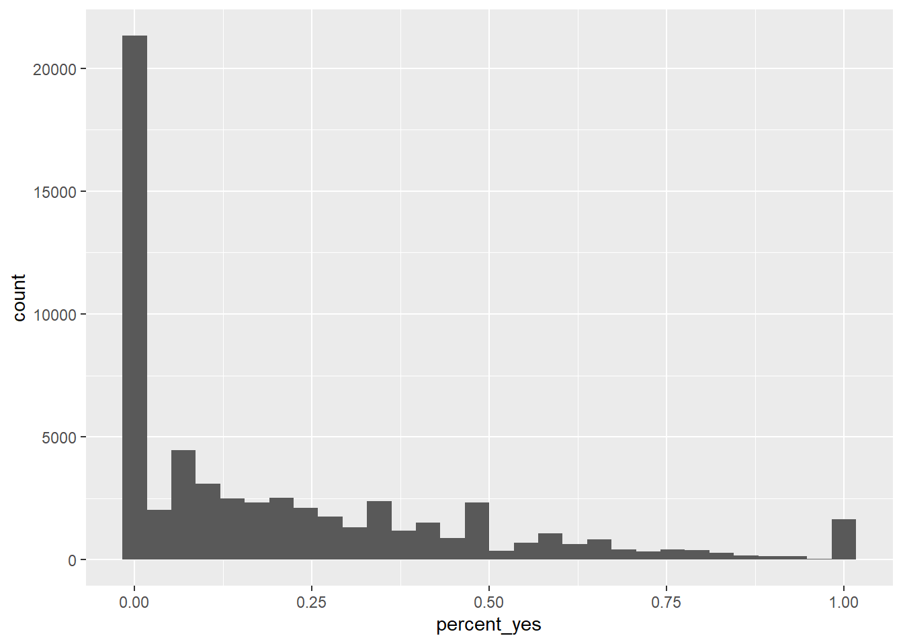
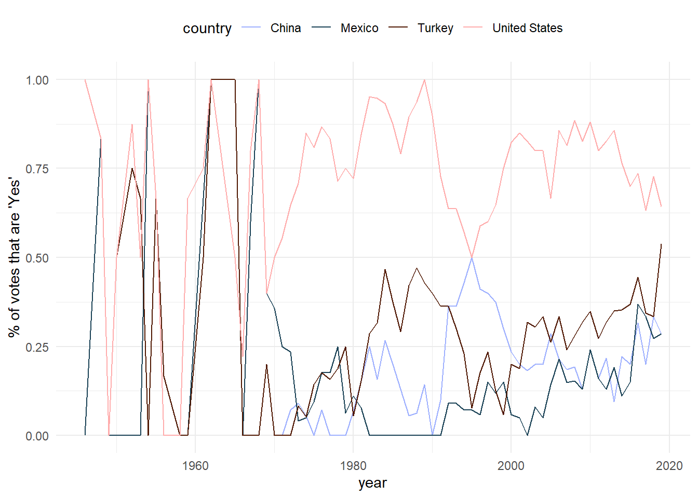
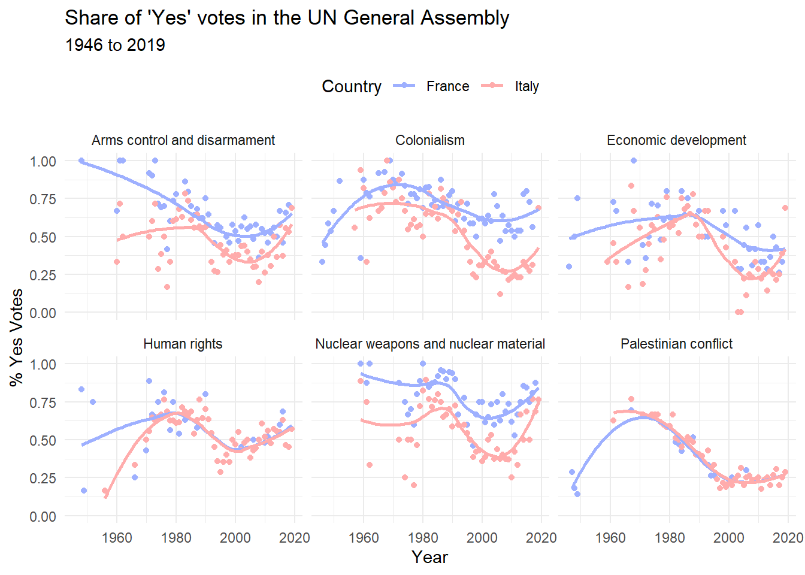

1 + 1[1] 2Quarto enables you to weave together content and executable code into a finished document. To learn more about Quarto see https://quarto.org.
When you click the Render button a document will be generated that includes both content and the output of embedded code. You can embed code like this:
1 + 1[1] 2You can add options to executable code like this
[1] 4The echo: false option disables the printing of code (only output is displayed).
library(tidyverse) Warning: package 'tidyverse' was built under R version 4.3.3Warning: package 'ggplot2' was built under R version 4.3.2── Attaching core tidyverse packages ──────────────────────── tidyverse 2.0.0 ──
✔ dplyr 1.1.3 ✔ readr 2.1.4
✔ forcats 1.0.0 ✔ stringr 1.5.0
✔ ggplot2 3.4.4 ✔ tibble 3.2.1
✔ lubridate 1.9.3 ✔ tidyr 1.3.0
✔ purrr 1.0.2
── Conflicts ────────────────────────────────────────── tidyverse_conflicts() ──
✖ dplyr::filter() masks stats::filter()
✖ dplyr::lag() masks stats::lag()
ℹ Use the conflicted package (<http://conflicted.r-lib.org/>) to force all conflicts to become errorslibrary(scico) # for color palette Warning: package 'scico' was built under R version 4.3.3library(DT) # for interactive table Warning: package 'DT' was built under R version 4.3.3

# install the package
# only needs to be done once on your machine
# better put all the installation stuff in the setup chunk
# install.packages("readr")
# load the package
# needs to be done every time you come back to working on the project
library(readr)
un_votes <- read_csv("data/un_votes.csv")Rows: 59284 Columns: 5
── Column specification ────────────────────────────────────────────────────────
Delimiter: ","
chr (2): country, issue
dbl (3): year, votes, percent_yes
ℹ Use `spec()` to retrieve the full column specification for this data.
ℹ Specify the column types or set `show_col_types = FALSE` to quiet this message.nrow(un_votes) # number of rows[1] 59284ncol(un_votes) # number of columns[1] 5dim(un_votes) # rows columns together (Roller Coaster)[1] 59284 5colnames(un_votes)[1] "country" "year" "issue" "votes" "percent_yes"# -- [MRH] Provide the total number of fields in the file/dataset
length(colnames(un_votes))[1] 5colnames(un_votes) |>
length() # return the length of this vector[1] 5un_votes |>
colnames() |> # get column names vector
length() # return the length of this vector[1] 5head(un_votes)# A tibble: 6 × 5
country year issue votes percent_yes
<chr> <dbl> <chr> <dbl> <dbl>
1 Afghanistan 1946 Colonialism 5 0.8
2 Afghanistan 1946 Economic development 6 0.667
3 Afghanistan 1946 Human rights 1 1
4 Afghanistan 1947 Colonialism 8 0.5
5 Afghanistan 1947 Economic development 2 0.5
6 Afghanistan 1947 Palestinian conflict 7 0.857tail(un_votes, n = 10)# A tibble: 10 × 5
country year issue votes percent_yes
<chr> <dbl> <chr> <dbl> <dbl>
1 Zimbabwe 2018 Economic development 18 0.167
2 Zimbabwe 2018 Human rights 22 0.318
3 Zimbabwe 2018 Palestinian conflict 16 0.0625
4 Zimbabwe 2018 Nuclear weapons and nuclear material 16 0.0625
5 Zimbabwe 2019 Colonialism 16 0.312
6 Zimbabwe 2019 Arms control and disarmament 16 0.312
7 Zimbabwe 2019 Economic development 16 0.312
8 Zimbabwe 2019 Human rights 14 0.286
9 Zimbabwe 2019 Palestinian conflict 14 0
10 Zimbabwe 2019 Nuclear weapons and nuclear material 17 0.412 summary(un_votes) country year issue votes
Length:59284 Min. :1946 Length:59284 Min. : 1.00
Class :character 1st Qu.:1977 Class :character 1st Qu.: 9.00
Mode :character Median :1993 Mode :character Median :14.00
Mean :1991 Mean :14.47
3rd Qu.:2006 3rd Qu.:20.00
Max. :2019 Max. :41.00
percent_yes
Min. :0.0000
1st Qu.:0.0000
Median :0.1053
Mean :0.2091
3rd Qu.:0.3333
Max. :1.0000 glimpse(un_votes)Rows: 59,284
Columns: 5
$ country <chr> "Afghanistan", "Afghanistan", "Afghanistan", "Afghanistan"…
$ year <dbl> 1946, 1946, 1946, 1947, 1947, 1947, 1948, 1948, 1948, 1948…
$ issue <chr> "Colonialism", "Economic development", "Human rights", "Co…
$ votes <dbl> 5, 6, 1, 8, 2, 7, 12, 9, 8, 6, 11, 3, 14, 3, 5, 6, 14, 3, …
$ percent_yes <dbl> 0.80000000, 0.66666667, 1.00000000, 0.50000000, 0.50000000…un_votes$issue |>
unique()[1] "Colonialism"
[2] "Economic development"
[3] "Human rights"
[4] "Palestinian conflict"
[5] "Arms control and disarmament"
[6] "Nuclear weapons and nuclear material"# [MRH] count the number of unique issue areas
un_votes$issue |>
unique() |>
length()[1] 6ggplot(data = un_votes, mapping = aes(x = percent_yes)) +
geom_histogram()`stat_bin()` using `bins = 30`. Pick better value with `binwidth`.
# Error in code if "+" is omitted and pipe is used instead
# ggplot(data = un_votes, mapping = aes(x = percent_yes)) %>%
# geom_histogram()# pipe the plot function to dataset as below
un_votes |>
ggplot(mapping = aes(x = percent_yes)) +
geom_histogram() `stat_bin()` using `bins = 30`. Pick better value with `binwidth`.
country_list <- c("United States", "China", "Mexico", "Turkey")un_votes |> # take the dataset
filter(
country %in% country_list, # select rows for countries in from country_list
issue %in% c("Human rights") # select cases for human rights votes
) |>
ggplot(mapping = aes(x = year, y = percent_yes, color = country)) +
geom_line() +
ylab("% of votes that are 'Yes'") +
scale_color_scico_d(palette = "berlin") + # adjust color
theme_minimal() + # change the appearance
theme(legend.position = "top") # change legend position
un_votes |> # take the dataset
filter(
country %in% c("Italy", "France"), # select the countries to work with
votes > 5 # only use records where there are more than 5 votes
) |>
ggplot(mapping = aes(
x = year, # over horizontal axis
y = percent_yes, # over vertical axis
color = country
)) +
geom_point() + # add points
geom_smooth(method = "loess", se = FALSE) + # add trend line
facet_wrap(~issue) + # split by issue
labs(
title = "Share of 'Yes' votes in the UN General Assembly",
subtitle = "1946 to 2019",
y = "% Yes Votes",
x = "Year",
color = "Country"
) +
scale_color_scico_d(palette = "berlin") + # adjust color
theme_minimal() + # change the appearance
theme(legend.position = "top") # change legend position`geom_smooth()` using formula = 'y ~ x'
un_votes |>
arrange(country) |>
select(country) |>
distinct() |>
datatable()